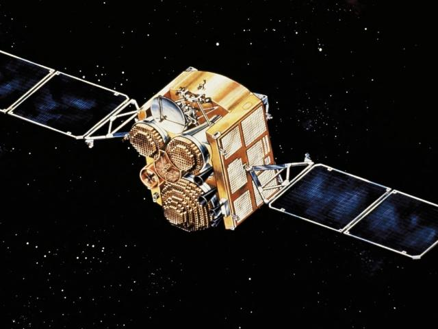

What is GPS?

GPS is a satellite-based system that helps devices find their location. Satellites send signals, ground stations monitor the system, and GPS receivers, like those in phones and cars, use the signals to determine their position on Earth. GPS is an integral part of modern life, used for navigation, mapping, and timing in various applications. It is maintained by the United States government and is freely available to anyone with a GPS receiver.
Learn More about GPS Segments
The GPS system has three main parts- the space segment, the control segment, and the user segment. The space segment consists of 24 satellites transmitting one-way signals giving current GPS satellite position and time. The control segment are the monitor and control stations maintaining satellite health and orbit. The user segment includes GPS receivers, which can be found in phones, cars, and other devices.
Learn More about GPS Services
GPS services are used by both military and civilian users for various applications, such as navigation, mapping, and timing synchronization. Various GPS augmentation systems and techniques can enhance system performance, including accuracy, integrity, and availability. GPS performance has given it millions of users worldwide, and it is expected to continue to be a critical technology for many applications in the future.
Learn More about the Future of GPS
As technology advances, GPS is expected to become even more accurate and reliable. The United States plan to implement features to support safety of life applications in aviation, maritime, and other critical sectors.